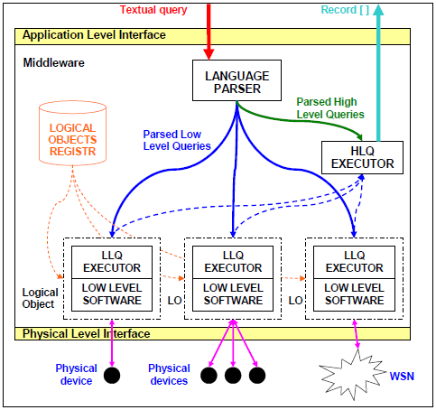
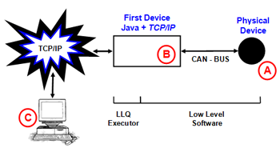

PerLa Project
"Declarative language and middleware
for pervasive systems"
for pervasive systems"
PerLa middleware
The goal of the middleware is to provide an abstraction for each device in terms of logical objects
and to support the execution of PerLa queries. During the design of
the middleware, we tried to make the definition and the addition of new devices easier. We also
tried to minimize the amount of low level code the user has to write to make the new device recognizable
by the middleware.
PerLa system is basically composed of three components:
- The NODES are heterogeneous devices equipped with sensors, able to collect data and to send them in the network managed by the middleware. Nodes can either be very simple devices (such as RFID tags or WSN nodes such as MOTES) or more complex devices (such as palms, portable computers or ad hoc boards).
- The MIDDLEWARE is a stack of software layers providing a high level abstraction of each node (called LOGICAL OBJECT). The middleware also implements a set of functionalities to allow communications among logical objects and to manage devices that enter and leave the system (following a "Plug and Play" behaviour).
- The LANGUAGE is an SQL like language designed to allow the querying of a pervasive system as it were a database. The goal of the language is to enable the final user to collect data in a fast and easy way, without dealing with low level programming issues.
The middleware is composed of the following layers:
- LANGUAGE PARSER. It receives textual queries as input, verifies their syntax and transforms them in a suitable format for distribution and execution.
- LOGICAL OBJECT REGISTRY. It is the component that maintains the list of the logical objects currently registered in the system. It is also used to find the set of logical objects that will be involved in the execution of a certain low level query.
- HIGH LEVEL QUERY EXECUTOR. Basically, it is a data streaming management systems (DSMS).
- LOW LEVEL SOFTWARE. This software layer adapts the different physical devices to the middleware. It also provides the abstraction of logical objects. We decided to implement the whole software, from the logical objects layer up, using JAVA technology. We also assumed that each logical object (that we can now consider as a JAVA remote object) is reachable via TCP/IP. If the physical device is connected to a different network (e.g. a CAN-BUS channel), the correspondent logical object will be instantiated on the nearest device equipped with both a JAVA Virtual Machine and a TCP/IP connection to the network managed by the middleware. This middleware layer implements the communication protocol between the logical object and the physical device.
- LOW LEVEL QUERY EXECUTOR. This is a JAVA component, contained in each logical object, whose goal is to receive and execute a parsed low level query.

Basically, the middleware exposes two interfaces to the final user:
- APPLICATION LEVEL INTERFACE. It provides methods to submit textual PERLA queries and to receive the results of executed queries. A precise definition of the interaction model between the user and the middleware has not been established yet; probably, two socket channels will be provided: the first one will be used to receive queries, while the second one will return produced records.
-
PHYSICAL LEVEL INTERFACE. The goal of this interface is
to allow the user to integrate a new device into the system. It is basically a
C library, that should be extended and recompiled
whenever a new device should be integrated in the system. We tried to minimize the low
level programming effort by the user to integrate a new technology in the middleware.
To reach this goal we defined the structure of a XML file
that should be generated for each new device. This file contains a full description of
device in terms of:
- available sensors
- measures that can be sampled
- communication protocol between the device and its logical object (e.g. structure of exchanged packets).
The figure highlights the interaction between a physical node and the middleware:

- (A) is the physical device equipped with sensors, where the user C code is executed.
- (B) is the embedded board or PC placed nearest to (A) and having an environment where the logical object can be hosted (i.e. (B) must execute a JAVA Virtual Machine and must be connected to the middleware via TCP/IP).
- (C) is the server where the logical objects registry is executed.
Communications between (B) and (C) are
completely managed by the middleware, while communications between (A)
and (B) (that can be performed over a non TCP/IP
channel, such as a CAN-BUS or serial channel) is only indirectly
managed by the middleware. In fact, the XML self-description file
presented above defines the parameters and the messages of the communication, that is performed executing
some code contained in the C library.
It is worth to notice that the presented scenario is the most general one, but (B)
and (C) components can be hosted on the same physical device when
it is powerful enough.
Download the full middleware executive summary